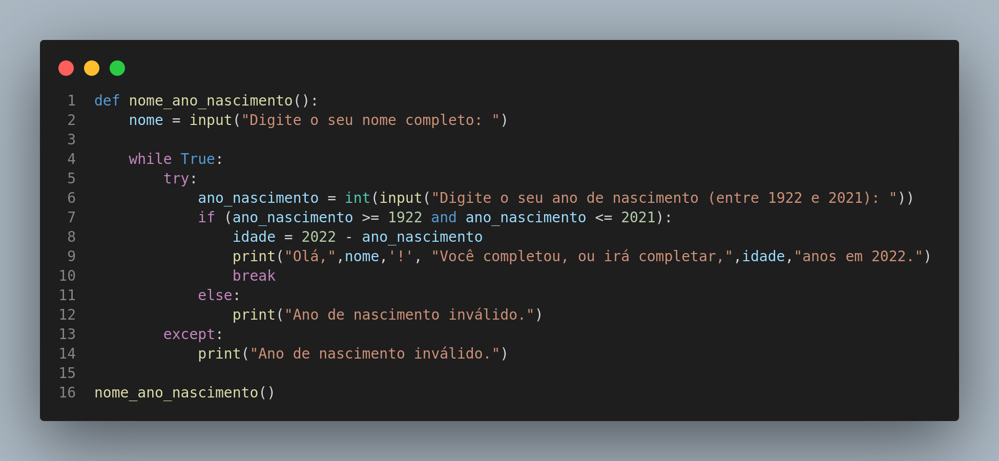

Instruções do projeto - Lógica Imperativa
Atividade 09 - Porgrama nome e nascimento
Nome: Jonathan P P Maia
Desenvolva um programa que recebe do usuário nome completo e ano de nascimento que seja entre 1922 e 2021.
A partir dessas informações, o sistema mostrará o nome do usuário e a idade que completou, ou completará, no ano atual (2022).
Caso o usuário não digite um número ou apareça um inválido no campo do ano, o sistema informará o erro e continuará perguntando até que um valor correto seja preenchido.
RESOLUÇÃO
